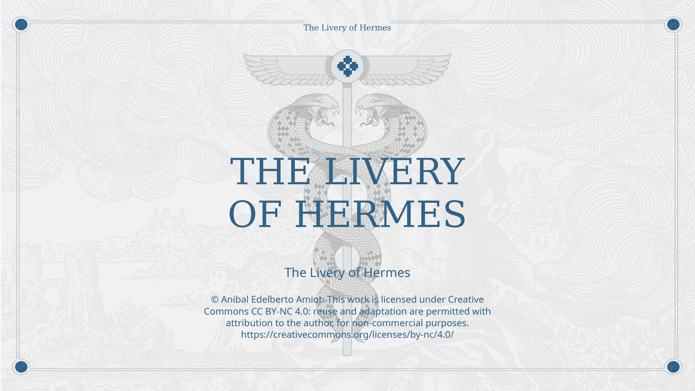
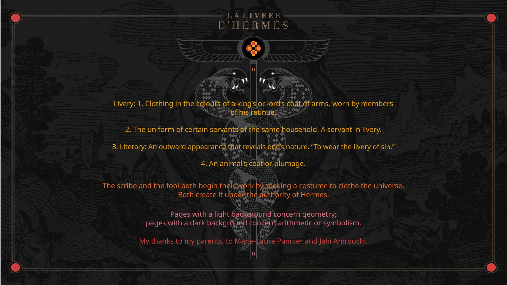
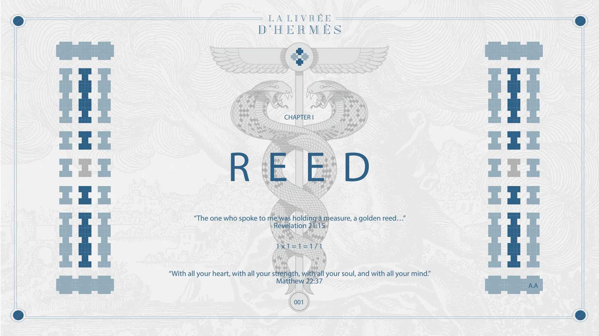
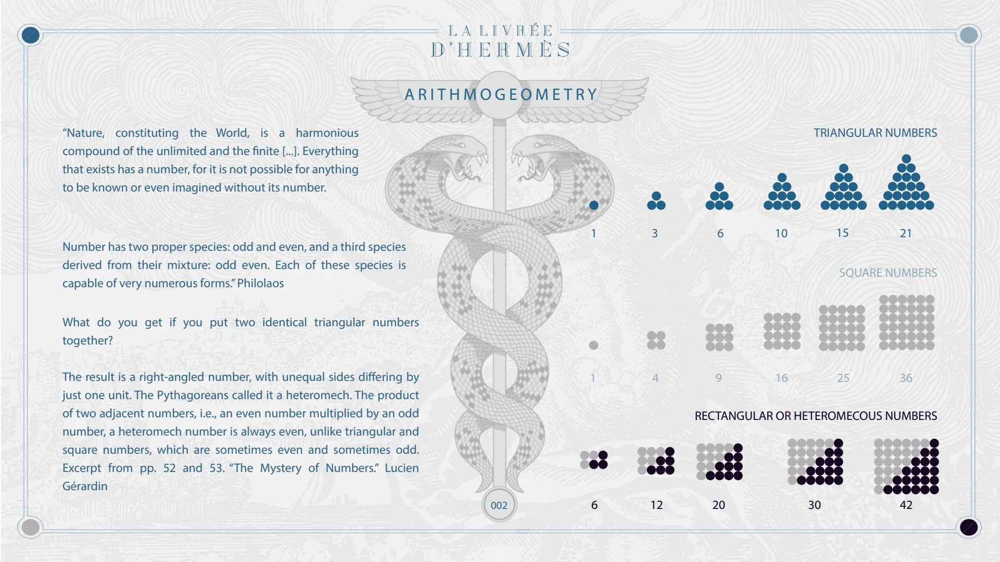
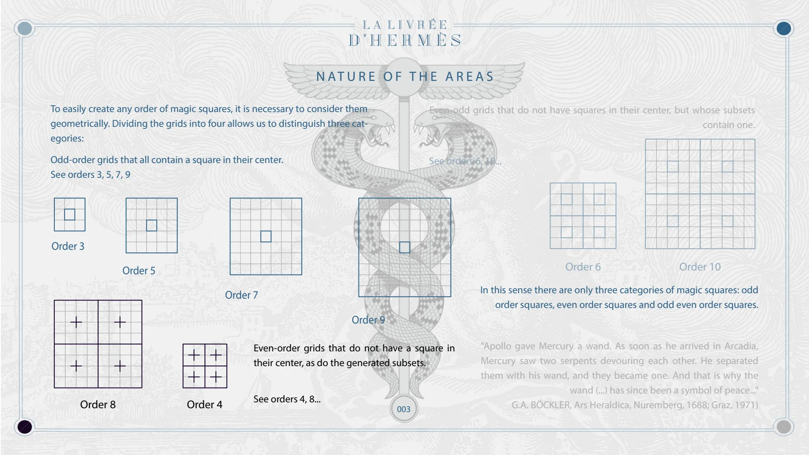
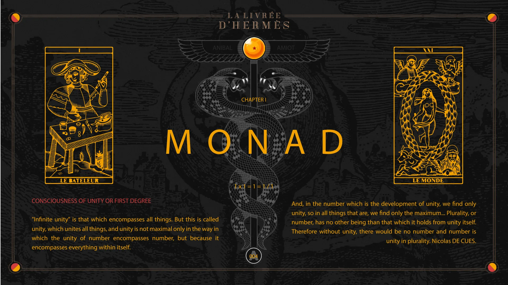
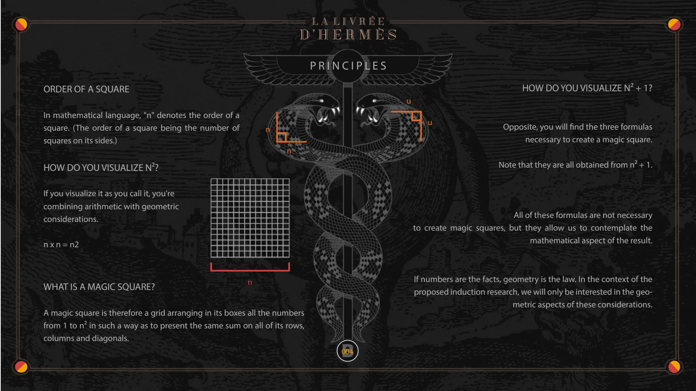
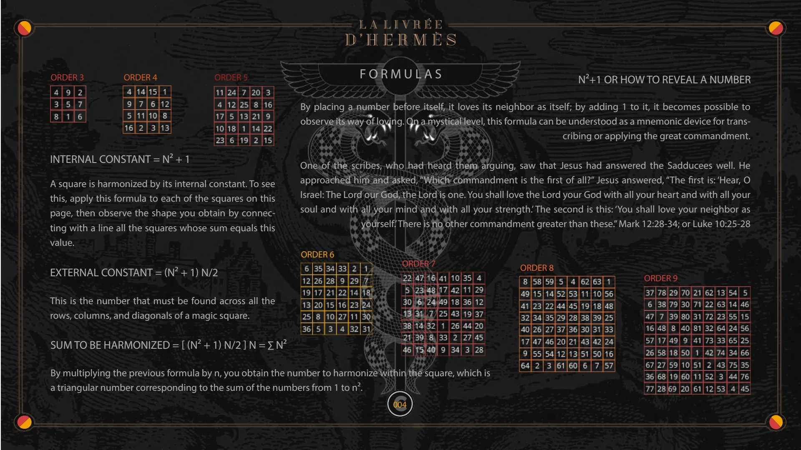

Chapter I — Reed, Monad
Pages 000A to 004C of the book · chapter 1 of 8
Chapter I of La Livrée d'Hermès: Reed and Monad. The arithmogeometry of figurate numbers, the nature of the areas, and the principles of the magic square: n², n² + 1, the internal and external constants.

The Livery of Hermes
© Anibal Edelberto Amiot. This work is licensed under Creative Commons CC BY-NC 4.0: reuse and adaptation are permitted with attribution to the author, for non-commercial purposes. https://creativecommons.org/licenses/by-nc/4.0/

n
ANIBAL
AMIOT
Livery: 1. Clothing in the colours of a king’s or lord’s coat of arms, worn by members of his retinue. 2. The uniform of certain servants of the same household. A servant in livery. 3. Literary: An outward appearance that reveals one’s nature. “To wear the livery of sin.” 4. An animal’s coat or plumage.
The scribe and the fool both begin their work by seeking a costume to clothe the universe. Both create it under the authority of Hermes.
Pages with a light background concern geometry; pages with a dark background concern arithmetic or symbolism.
My thanks to my parents, to Marie-Laure Pannier and Jahi Amrouchi.
u

CHAPTER I
REED
“The one who spoke to me was holding a measure, a golden reed…” Revelation 21:15
1 x 1 = 1 = 1 / 1
“With all your heart, with all your strength, with all your soul, and with all your mind.” Matthew 22:37
A.A 001

ARITHMOGEOMETRY
“Nature, constituting the World, is a harmonious compound of the unlimited and the finite [...]. Everything that exists has a number, for it is not possible for anything to be known or even imagined without its number.
TRIANGULAR NUMBERS
Number has two proper species: odd and even, and a third species derived from their mixture: odd even. Each of these species is capable of very numerous forms.” Philolaos
1 3 6 10 15 21
SQUARE NUMBERS
What do you get if you put two identical triangular numbers together?
The result is a right-angled number, with unequal sides differing by just one unit. The Pythagoreans called it a heteromech. The product of two adjacent numbers, i.e., an even number multiplied by an odd number, a heteromech number is always even, unlike triangular and square numbers, which are sometimes even and sometimes odd. Excerpt from pp. 52 and 53. “The Mystery of Numbers.” Lucien Gérardin
1 4 9 16 25 36
RECTANGULAR OR HETEROMECOUS NUMBERS
002 6 12 20 30 42

NATURE OF THE AREAS
To easily create any order of magic squares, it is necessary to consider them geometrically. Dividing the grids into four allows us to distinguish three categories:
Even-odd grids that do not have squares in their center, but whose subsets contain one.
Odd-order grids that all contain a square in their center. See orders 3, 5, 7, 9
Order 3
See orders 6, 10...
Order 8 Order 5 Order 4 Order 7 Order 9
Even-order grids that do not have a square in their center, as do the generated subsets.
See orders 4, 8...
003 Order 6 Order 10
In this sense there are only three categories of magic squares: odd order squares, even order squares and odd even order squares.
"Apollo gave Mercury a wand. As soon as he arrived in Arcadia, Mercury saw two serpents devouring each other. He separated them with his wand, and they became one. And that is why the wand (...) has since been a symbol of peace..." G.A. BÖCKLER, Ars Heraldica, Nuremberg, 1688; Graz, 1971)

CHAPTER I
MONAD
1 x 1 = 1 = 1 / 1
ANIBAL
CONSCIOUSNESS OF UNITY OR FIRST DEGREE
"Infinite unity" is that which encompasses all things. But this is called unity, which unites all things, and unity is not maximal only in the way in which the unity of number encompasses number, but because it encompasses everything within itself.
A
AMIOT
And, in the number which is the development of unity, we find only unity, so in all things that are, we find only the maximum... Plurality, or number, has no other being than that which it holds from unity itself. Therefore without unity, there would be no number and number is unity in plurality. Nicolas DE CUES.
004

PRINCIPLES
ORDER OF A SQUARE
In mathematical language, "n" denotes the order of a square. (The order of a square being the number of squares on its sides.)
HOW DO YOU VISUALIZE N²?
n n
If you visualize it as you call it, you're combining arithmetic with geometric considerations.
n x n = n2
WHAT IS A MAGIC SQUARE?
n
A magic square is therefore a grid arranging in its boxes all the numbers from 1 to n² in such a way as to present the same sum on all of its rows, columns and diagonals.
B n n
HOW DO YOU VISUALIZE N² + 1?
Opposite, you will find the three formulas necessary to create a magic square.
Note that they are all obtained from n² + 1.
All of these formulas are not necessary to create magic squares, but they allow us to contemplate the mathematical aspect of the result.
If numbers are the facts, geometry is the law. In the context of the proposed induction research, we will only be interested in the geometric aspects of these considerations.
004

FORMULAS
ORDER 3
ORDER 4
ORDER 5
INTERNAL CONSTANT = N² + 1
A square is harmonized by its internal constant. To see this, apply this formula to each of the squares on this page, then observe the shape you obtain by connecting with a line all the squares whose sum equals this value.
EXTERNAL CONSTANT = (N² + 1) N/2
This is the number that must be found across all the rows, columns, and diagonals of a magic square.
SUM TO BE HARMONIZED = [ (N² + 1) N/2 ] N = ∑ N²
By multiplying the previous formula by n, you obtain the number to harmonize within the square, which is a triangular number corresponding to the sum of the numbers from 1 to n².
N²+1 OR HOW TO REVEAL A NUMBER
By placing a number before itself, it loves its neighbor as itself; by adding 1 to it, it becomes possible to observe its way of loving. On a mystical level, this formula can be understood as a mnemonic device for transcribing or applying the great commandment.
One of the scribes, who had heard them arguing, saw that Jesus had answered the Sadducees well. He approached him and asked, “Which commandment is the first of all?” Jesus answered, “The first is: ‘Hear, O Israel: The Lord our God, the Lord is one. You shall love the Lord your God with all your heart and with all your soul and with all your mind and with all your strength.’ The second is this: ‘You shall love your neighbor as yourself.’ There is no other commandment greater than these.” Mark 12:28-34; or Luke 10:25-28
ORDER 6
ORDER 7
C
ORDER 8
ORDER 9
004
© Anibal Edelberto Amiot. CC BY-NC 4.0 — creativecommons.org/licenses/by-nc/4.0 · DOI 10.5281/zenodo.22722485